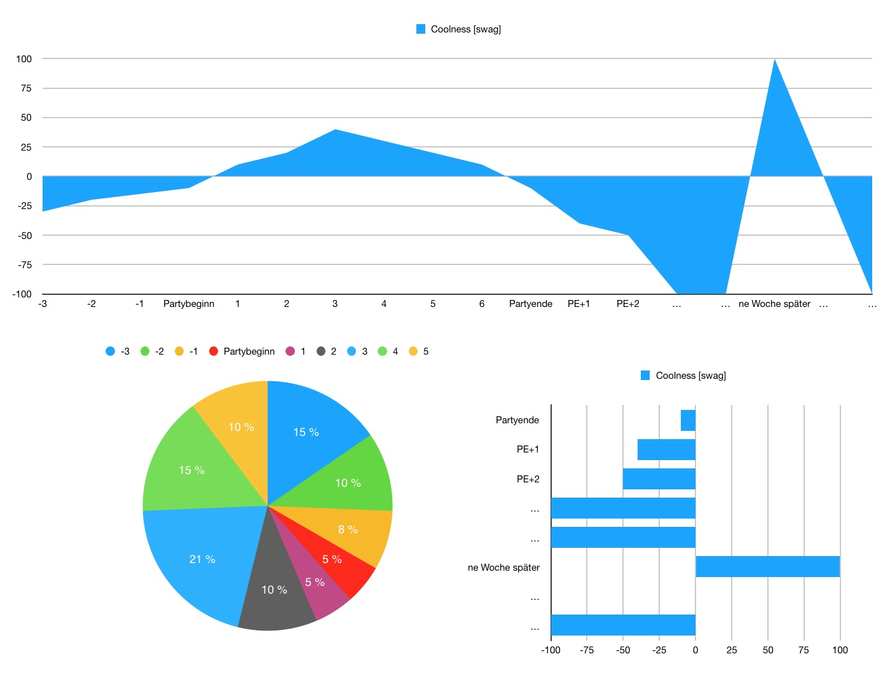

Neutrale Fakten zu partys - seriös präsentiert

Musik, die wirklich außergewöhnlich anders und gut ist – weswegen die Band um Konni Kass auch vergangenes Jahr für den „Anchor“-Award des Reeperbahn-Festivals nominiert war. Die kraftvolle und gleichzeitig zerbrechliche Elfenstimme von Kass verbindet sich mit wabernd-warmen Sounds von Synthesizern und Rhythmus-Instrumenten. Und dann ist da noch das Saxofonspiel der hübschen Frontfrau: Zu oft wirken Saxofone in der Popmusik leicht schleimig – Konni Kass gibt dem Instrument seine Coolness zurück.
Wenn man von der verwunschenen Herkunft von Konni Kass weiß, geht einem ein Licht auf: Die Band Konni Kass (sie ist nach ihrer Frontfrau benannt) kommt von den Färöern – dieser kleinen abgelegenen Inselgruppe zwischen Großbritannien, Norwegen und Island. Dort leben nur knapp 50.000 Menschen. „In der Musikszene unseres Landes kennt jeder jeden – wir haben alle schon mal miteinander gejammt. Genremäßig gibt’s bei uns deswegen keine Grenzen“, sagen Konni Kass.
Die Anlagen für eine große Popkarriere sind vorhanden. Auf keinen Fall verpassen!